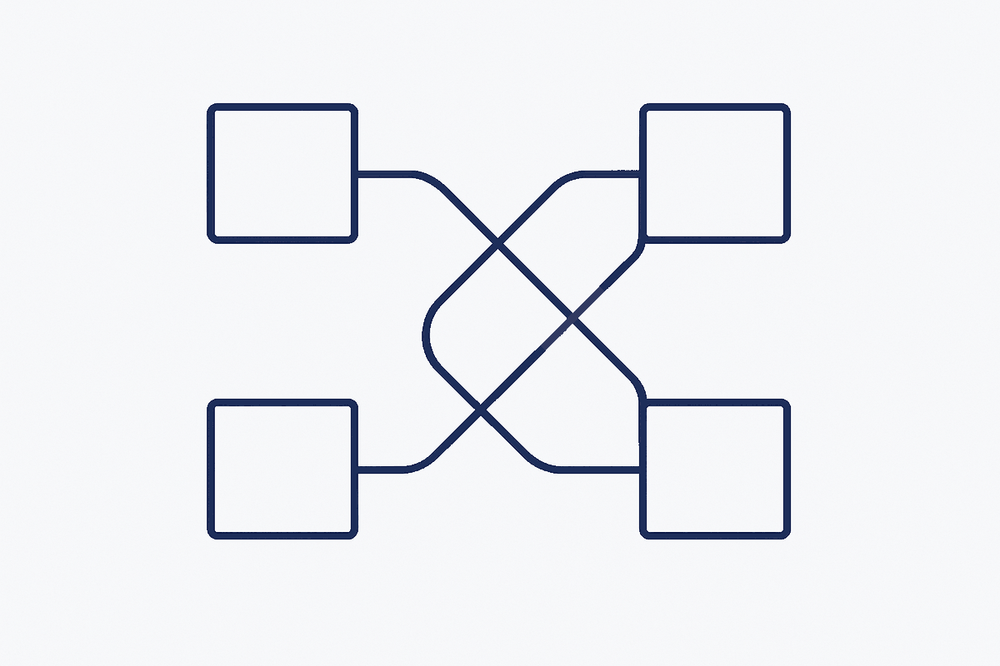

Structured
Metadata
Overview
The idea
Where this fits
Methodology
Concepts
Patterns
Glossary
Explore
Structure metadata
Transformation metadata
Generated artifacts
Browser
Skills
Decisions
Timeline
Writing
Articles
Inspiration
The method →
Anti-Patterns
Anti-Patterns

All items:
Coupled by default
—
The anti-pattern: systems reach into each other's internals because nothing stopped them — dependencies nobody
Decision black box
—
The anti-pattern: the outcome was recorded, the reasoning was not — so every decision has to be re-argued from
Documentation theatre
—
The anti-pattern: documentation produced to satisfy a process rather than a reader — complete, compliant, and
Fragmented schools of thought
—
The anti-pattern: a discipline splits into rival interpretations of the same method, and practitioners spend t
Gated knowledge
—
The anti-pattern: understanding locked behind a person, a licence or a login — access controlled by whoever ho
Local tidiness
—
The anti-pattern: every folder looks reasonable up close, and nobody can say what the system is. Order without
Model as drawing
—
The anti-pattern: treating the model as a picture to be drawn rather than knowledge to be captured — so it inf
Social cost of method
—
The anti-pattern: a method's vocabulary becomes insider language, splitting the team into those who can follow